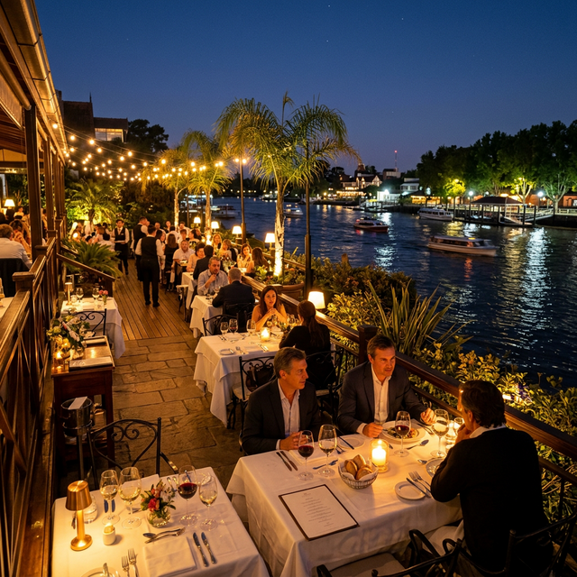

La experiencia de vivir en Villanueva se completa en la mesa. No solo se trata de la tranquilidad de los barrios, sino de cómo el complejo ha madurado su oferta gastronómica para estar a la altura de los paladares más exigentes. Para quienes buscan venta de casas en Villanueva, saber dónde cenar un viernes a la noche o dónde tomar el mejor café de especialidad es vital.
El polo gastronómico de Villanueva se concentra hoy en sus centros comerciales, pero también se nutre de la cercanía con polos consolidados en Benavídez y el Boulevard de Tigre.
Vila Terra: El epicentro de las salidas
Vila Terra Center se ha convertido en el lugar inevitable para los desayunos post-gimnasio y las cenas familiares. Con propuestas que van desde la cocina de autor hasta el sushi de alta gama, el centro comercial ofrece una atmósfera relajada donde es común encontrarse con vecinos y amigos. Las terrazas de sus locales son el lugar preferido para las noches de verano en Villanueva.
VEN Villanueva y el nuevo corredor Gastronómico
El área de **VEN Villanueva** y el **VEN Street Center** sobre la Avenida Italia también están sumando opciones vibrantes. Desde hamburgueserías de culto hasta pizzerías de estilo napolitano, el residente de barrios como San Marco o San Rafael hoy tiene opciones de calidad a 5 minutos de su puerta.
Cercanía con el polo náutico de Maschwitz y Dique Luján
Para quienes buscan una experiencia más rústica o vinculada directamente al río, Villanueva tiene a un paso las opciones de Dique Luján y los restos del polo gastronómico de Maschwitz. La diversidad es total: desde un asado criollo frente al canal hasta cocina italiana de exportación.
Delivery Premium: Comer bien sin salir de casa
Un fenómeno interesante en Villanueva es la calidad del delivery. Dada la infraestructura de seguridad de los barrios, han surgido "dark kitchens" y propuestas gastronómicas de altísimo nivel que llegan a la puerta de tu casa en minutos, asegurando que incluso una cena relajada en la galería siga siendo una experiencia Gourmet.
Mudarse a Villanueva es también una decisión sibarita. Si valorás salir a comer y volver caminando o en un breve trayecto seguro por el boulevard, este es tu lugar. ¿Querés vivir cerca de los mejores restaurantes? Consultanos por las casas con mejor ubicación.
Tu próxima cena comienza en tu nueva casa
Explora las propiedades en los barrios con mejor acceso gastronómico de Villanueva.
Quiero Asesoramiento